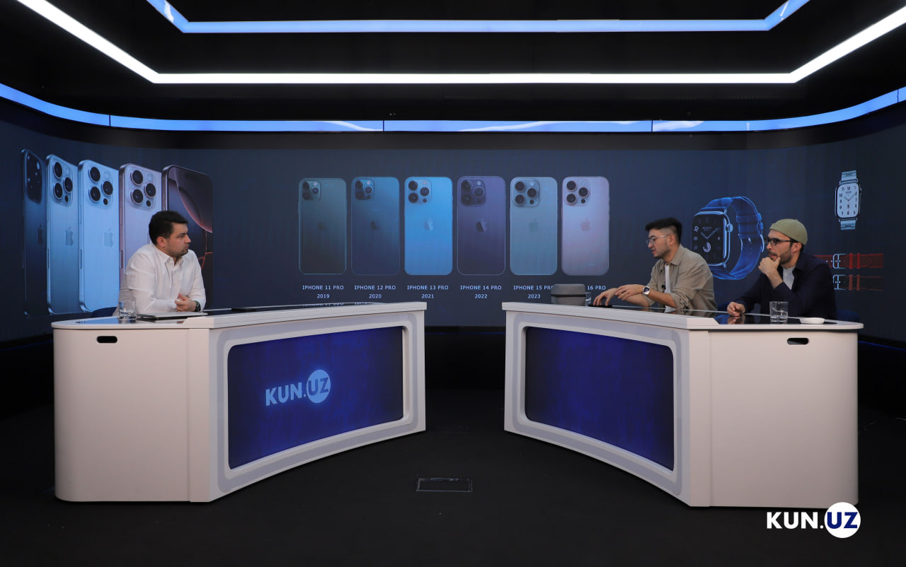

9 sentabr kuni Apple kampanyasi o'zinig yangi taqdimoti iPHone 16 linyasidan smartfon, 10-avlod aqllisoatlari baboshq qurilmalari taqdim qildi. Ko'pchilik iPHone'lar dizzaynida o'zgarish bo'lmayotganida nolimoqda, shunga qaramay ayrimlar uchun qurilmani hammdan birincchi, qimatroq narsa sotib olish bu yil ham "pont" bo'ldi. Kun.uz muxbiri texnoblogerlar Javlon Asatullayev va Ma'ruf Boymuradov bilan jamiyatda Apple fenomeni va kupertionliklarning yangi mahsulotlari haqida subhatlashdi.
- Har birga alohida toxtalishimizdan oldin, keling dastlab taqdimot haqida. 9 sentyabrda taqdimot sizning kutilmalaringizni qanchalik oqladi? siz yana nimalar kutgandingiz?
|Javlon Asatullayev:
– Men iPhone’ning yangi ko‘rinishi qanday bo‘lar ekan degan savolni oldimga qo‘ymagandim, chunki bu haqida taxminlarim bor edi. Buni WWDC taqdimotidako‘rib bo‘lgandim. Va biz foydalanayotgan smartfonlar o‘z o‘rnini AI iPhone'larga bo‘shatyapti. Ya’ni sun’iy intellekt boshqaruvidagi telefonlar davriga yetib kelmoqdamiz. Va o‘z savollarimga WW DC taqdimotida javob olgandim va 9 sentabrdagi taqdimotdan biror katta yangilik kutmagan edim.
Ma’ruf Boymurodov:
– Men ham Javlon akaning fikrlariga qo‘shilaman.Yildan yilga qurilmalarning dizayni va tuzilishini taxmin qilish imkoni oshmoqda. iPhone 16 Pro'ning ham qanday dizaynda bo‘lishi oldindan ma’lum edi. Apple watch'lar borasida katta narsani kutishgan bo‘lishsa ham 10 yillikdagi so‘nggi mahsulot deb taqdim qilingan bo‘lsa, bu oxirgi 3 yillikda shunday shaklda chiqishni davom etadi. Bundan o‘zgacha shaklda watch'lar chiqmaydi menimcha. Ammo quloqchinlar bo‘yicha ko‘proq narsani kutgandim. Kutganimdan ancha kamroq narsa taqdim qilindi.
– Yangi “ayfon” 16'ning dizayni men ko‘rgan yoki o‘qigan odamlarning ko‘pchiligi tanqid qildi, 11 avloddan buyon deyarli o‘zgarish yo‘qligi aytilmoqda. Yangi mobil qurilmalarning o‘zgarishi sizningcha sekinlashib qolmadimi yoki Apple yangicha dizaynlar uchun ilhom topolmayaptimi? Javlon Asatullayev:
– Butun dunyoda kremniyning narxi oshgan va Apple kompaniyasi raqobat kuchli bo‘lgani uchun ham Apple mahsulotlarining tannarxi oshishiga qaramay, narxlarni bu qadar ko‘tarib tashlamayapti. Agar mahsulot xomashyosi sifatli qilinib narxni bir xilda ushlab turish amalga oshirilsa, kompaniya inqirozga kirishi mumkin. Shu sababdan ham iPhone 11 dan keyin mahsulotlarning ko‘rinishi bir xil bo‘lib qolayotgan bo‘lishi mumkin. Bu albatta mening fikrim. Apple har yili yangi mahsulot chiqaradi va bu mahsulotlarning ko‘rinishi har xil bo‘lishi kerak degan majburiyat olmagan. Va bu oddiy holat albatta. Kelajakda bu borada boshqa rejalar amalga oshirilishi mumkindir. Taxminimcha, texnologik rivojlanishning keyingi bosqichi qo‘limizni telefondan bo‘shatish bo‘ladi: telefonlarimiz mashinada yoki sumkada turgan holda uning boshqaruv obekti o‘zgarishi mumkin. Bu ko‘zoynak yoki soat orqali amalga oshirilishi mumkin.
– Yangi iPhoneʼlardagi kamera texnologiyasi oldingidan yaxshiroq bo‘lgani haqida aytishadi. Lekin 14-avloddan boshlab 48 MP'dan oshmayapti. Unda yangi o‘zgarishlar qanday va foydalanuvchi buni qanday sezadi? Ma’ruf Boymurodov:

– iPhone ishqibozlari uchun keng burchakli kamerani (ultrawide) 12 MP'dan 48 MP'ga o‘tish katta o‘zgarish sifatida baholanishi mumkin. Keng kamerada rasm olib yurgan odam bundagi farqlarni sezadi. Texnikani yaxshi tushunadigan odamlar undagi o‘zgarishlarni tez ajrata olishadi. iPhone kamerasidagi yangi qulay xususiyatlardan biri 120 FPS'da olingan videolarni, keyinroq 60, 30 yoki 24 FPS'ga o‘zgartirish mumkinligida. Bu mobilograflar uchun juda katta qulaylik, degani.
– O‘zi Apple telefonlari fenomeni reklamalarsiz nima uchun odamlar orasida bunchalik “pont” darajasiga chiqib ketdi? 3-4 barobar qimmatga bo‘lsa ham yangi “ayfon” olish, har doim yangilash xohishiga nimalar majburlaydi, odamlarni?
Ma’ruf Boymurodov:– Bu Apple’ga bog‘liq vaziyat emas insonlarning psixologiyasiga bog‘liq narsa. Qora Gentra menda bo‘lishi kerak, iPhone'ning yangi formasi menda bo‘lishi kerak deb hisoblovchilar bu kabi holatning kuchayishiga sabab bo‘lishmoqda.
Javlon Asatullayev:
– Bu rivojlanishi sust kechadigan mamlakatlarda ko‘proq uchraydigan holat. Bu nafaqat O‘zbekistonda, Bangladesh, Hindistonda bu holatga duch kelish mumkin. Bir necha kun hech kimda yo‘q yangi “ayfonni” tutib yurish uchun ayrimlar 2-3 ming dollar ko‘proq to‘lashga ham rozi. Va buning ortidan o‘zbeklarning shu “muammosi”ni bilgan boshqa bir o‘zbek foyda qilyapti, Apple kompaniyasi emas. Boya aytilganidek kompaniyaga bog‘liq emas, balki odamlarning ruhiyatidagi muammolar va orzu-havas.Men bir necha yil oldin Apple mahsulotlarini sotish bilan shug‘ullanmoqchi bo‘ldim va bir narsani shu yerda angladim: O‘zbekistonga ko‘p holatlarda korobkasidan ochilgan, ba’zida ishlatilgan qurilmalar kirib kelar ekan. Ba’zilari boj to‘lamaslik uchun bojxonada ochilgani ham bo‘ladi. Shuning uchun yangi Apple qurilmalarini olayotganda ehtiyot bo‘lish kerak. Yangi Apple mahsulotlarini seriya raqami orqali kompaniya o‘zi yaratgan ushbu sayt checkcoverage.apple.com orqali yoki www.3u.com dasturi orqali tekshirib ko‘rish mumkin. To‘liq suhbatni yuqoridagi video orqali ko‘rishingiz mumkin.